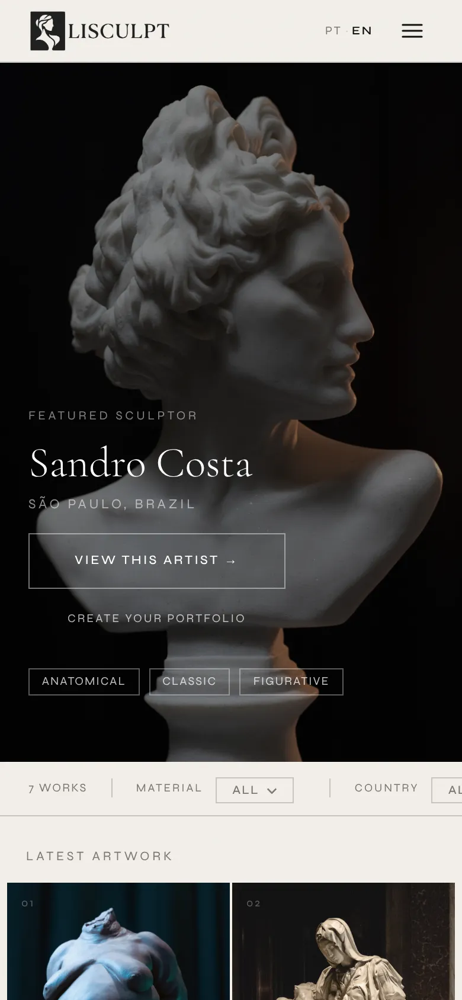

01The problem
At a sculpture course I met many talented artists who struggled to promote and sell their own work. Generic portfolio platforms mix sculpture with illustration, photography and graphic design, and it gets lost there. A sculpture also needs context a flat image does not carry: material, dimensions, technique.
As a UI/UX designer and developer, I asked a simple question: what if there was a place on the internet made only for sculptors to show and sell their work?
02Listening first
Before building anything I interviewed sculptors and confirmed the need was real. Then came a research phase on how museums and collections describe works and artists, and which data standards they use. In parallel I showed prototypes and screens to sculptors and adjusted from what they said.
- Interviews with working sculptors to validate the need
- Artwork data modelled on museum cataloguing standards, so the catalogue can later talk to institutions, researchers and other art databases
- Prototype rounds with artists before and during the build
03A decision the artists changed
The first version was an invite-only curated directory.
Feedback from the artists themselves changed that. They wanted to set up their portfolio on the spot, without asking and waiting. So signup became open to any sculptor: two short steps, and you land straight in your own studio. Curation moved to what is already published, from an admin tool.
One gate stayed on purpose. Images remain the artist's. Before a work goes live, the artist authorises the display of that specific piece, and that consent is recorded on the server before publishing. Use of the artist's own image is a separate choice they can withdraw at any time.
04Art direction
The interface steps back so the work can show. The reference is not social media but the museum: the pale wall, the discreet label next to the piece, the printed catalogue.
- Tone. Institutional and welcoming, the way a museum talks to an artist.
- Type. Cormorant Garamond for titles, recalling catalogues and museum plaques. Syne, uppercase and widely spaced, for labels and navigation.
- Images. Large photos with no decoration.
- Artwork page. An encyclopedia-style info box (material, dimensions, technique, style) and several images of the same piece.
| Colour | Use | Code |
|---|---|---|
| Parchment | Background | #F2EFE9 |
| Ink | Text and titles | #0D0D0D |
| Warm grey | Secondary information | #7A7770 |
| Stone | Lines and dividers | #C8C5BF |
05How it's built
I designed and built the whole thing, orchestrating AI coding agents for the heavy lifting while keeping the architecture and every product decision in my hands.
- Static front end in HTML, CSS and JavaScript, bilingual (Portuguese and English)
- Supabase for auth, database and storage
- Continuous deploy from GitHub to the host with a GitHub Action
- Artist studio for profiles and works, plus an admin tool for curation (featured artist, publication, removal)
- Public gallery filtered by material, country and style, with a page for every artist and every piece
06Where it stands
- Live at lisculpt.com, open to sculptors from any country
- Twelve artists published at launch, with 30 to 40 works
- Invited to present the project at a local gallery
- Partnership with a sculpting school
- Scope already reaching neighbouring crafts: ceramics, printmaking, 3D modelling and digital sculpture, toy art
Next: social channels as an extension of the gallery, direct sales through the artist, a printable certificate of authenticity, and a portfolio export galleries accept. One principle runs through every phase: portfolios are always free.